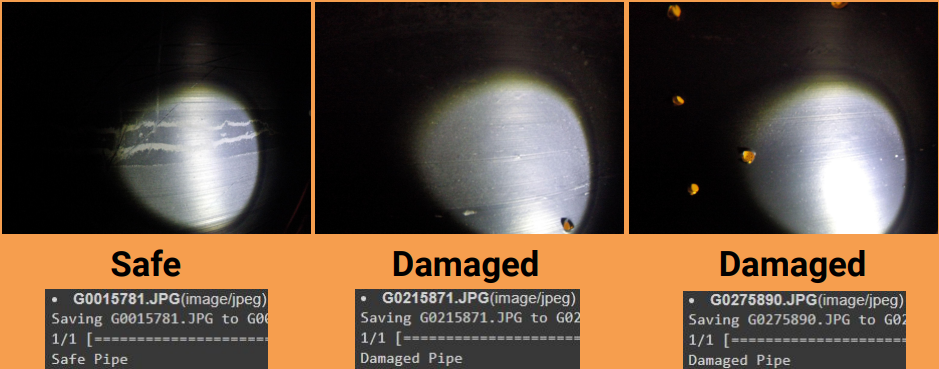

Underwater Pipe Anomaly Detector

Pipelines as crucial infrastructural components, are subjected to a range of environmental and operational stresses that can result in exterior deformities, which if left unchecked, can lead to larger scale damage, leakage, or catastrophic failure. These deformities can range from dents, rust, and cracks, to other structural inconsistencies. However, manual inspection of these vast pipeline networks is not only inefficient but also prone to human error. The challenge is to design an autonomous solution for a theoretical robot that can traverse the length of pipelines, scanning the exterior with high precision and identifying any abnormalities. Upon detection, this solution should be able to pinpoint the exact GPS location of the defect and provide immediate visual feedback to remote operators. If deemed necessary by the operator based on the initial scan, the robot should possess the capability to conduct a more detailed scan of the area, gathering enough data to produce a high-definition 3D model of the defect. This 3D model should be compatible with CAD modeling software, enabling detailed analysis and planning for potential repairs or maintenance activities.
To address the stated problem, we proposed the application-based development of a computer vision-based autonomous system that travels inside emptied-out pipelines and scans the inner walls to detect abnormalities. The system will incorporate real-time image processing to highlight areas of concern.
The software should run on a theoretical robot that will travel along the inside of the pipe with a camera facing toward the wall of the pipe. To simulate the robot and gather photographic data for to train and test our software. We made a pipe that is damaged in some areas and a rig to carry a camera to photograph the pipe in the way that the robot would.
Using machine learning and computer vision, real-time image processing will identify abnormalities such as dents, rust, and cracks. When detected, the robot will drop a GPS pin and relay the suspect images to a remote operator for review.
If the operator deems a more thorough examination is necessary, the robot will return to the flagged location and deploy an advanced scanning technique to map the area in high resolution, producing data that can be converted into a 3D model for CAD software integration.
We created a scale model of a pipeline and use the proposed scanning mechanism to simulate real-world data.
Starting Datasets:
Using our prototype setup, we captured images of a healthy pipe and images of a damaged pipe. We classified this data and used it to train our software.
I developed a CNN that used our data to categorize it as either a broken or safe pipe.
Ultimately we were able to successfully label the photos even in the most difficult scenerios.